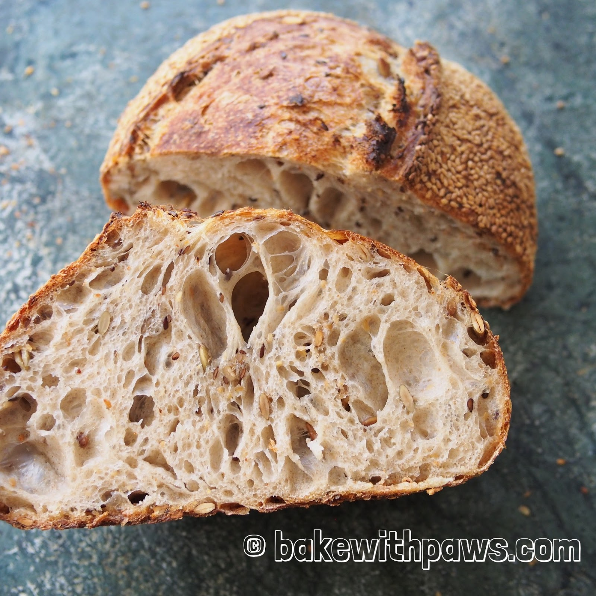
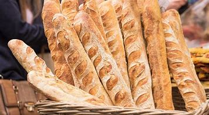
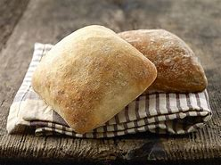
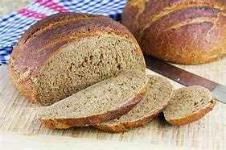
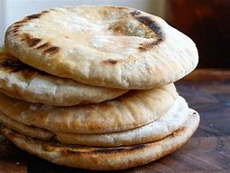
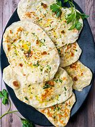
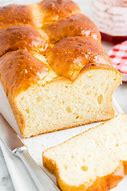
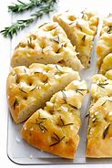

| Name | Origin | Description | Baking Time | Ingredients | Image |
|---|---|---|---|---|---|
| Sourdough | Ancient Egypt | A type of bread made by the fermentation of dough using naturally occurring lactobacilli and yeast. | 30-40 minutes | Flour, water, salt, natural yeast |  |
| Baguette | France | A long, thin loaf of French bread that is commonly made from basic lean dough. | 20-25 minutes | Flour, water, yeast, salt |  |
| Ciabatta | Italy | An Italian white bread made from wheat flour, water, salt, yeast, and olive oil. | 25-30 minutes | Flour, water, yeast, salt, olive oil |  |
| Rye Bread | Eastern Europe | A type of bread made with various proportions of flour from rye grain. | 30-35 minutes | Rye flour, water, yeast, salt |  |
| Pita | Middle East | A soft, slightly leavened flatbread baked from wheat flour, which can be opened to form a pocket. | 10-15 minutes | Flour, water, yeast, salt, sugar |  |
| Naan | India | A leavened, oven-baked or tawa-fried flatbread found in the cuisines of India, Iran, Myanmar, and the Caribbean. | 15-20 minutes | Flour, water, yeast, salt, yogurt |  |
| Brioche | France | A soft, sweet bread made with eggs, butter, and a bit of sugar, often used for desserts or breakfast. | 30-35 minutes | Flour, eggs, butter, sugar, yeast, salt |  |
| Focaccia | Italy | A flat oven-baked bread similar in style and texture to pizza dough, often seasoned with olive oil and herbs. | 20-25 minutes | Flour, water, yeast, salt, olive oil, herbs |  |